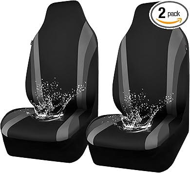

May 2026
Finding good scramblerseatcovers shouldn't require hours of research. Yet in 2026, the sheer number of options makes it harder than it should be.
Ignoring the fine print — Some scramblerseatcovers listings look great until you realize key parts are sold separately.
Waiting for the perfect deal — If you need scramblerseatcovers now, buy now. A 10% discount in 3 months costs you 3 months of use.
Trusting fake reviews — Look for reviews with photos and specific details. Generic praise is often planted.
Blind brand loyalty — Your favorite brand might not make the best scramblerseatcovers. Stay open to better options.
→ Jeep CJ Interior Upgrades — Best seller

→ Jeep Scrambler Seat Covers — Editor's pick
→ Jeep Scrambler Floor Mats — Highly reviewed
→ Vintage Jeep Interior Accessories — Top rated
→ Jeep CJ Seat Covers — Great value
2026 has brought quality scramblerseatcovers options at every price point. See our complete guide for current recommendations.